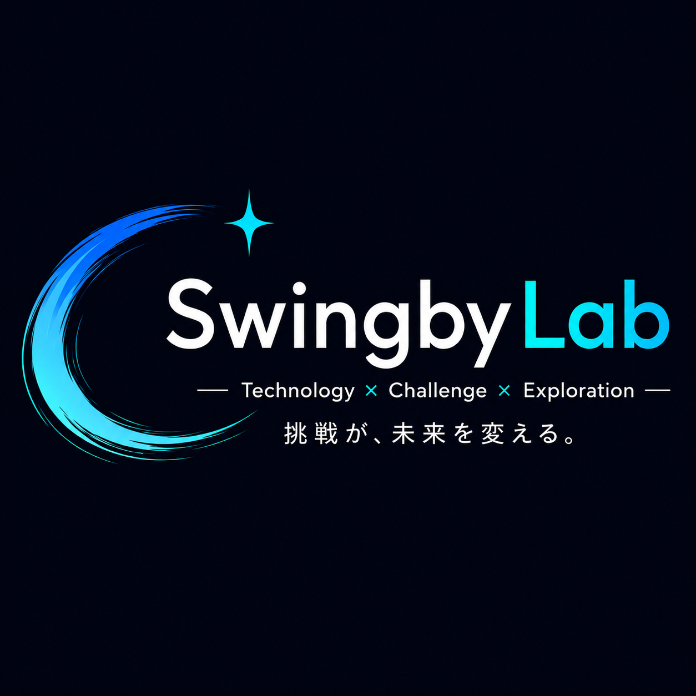
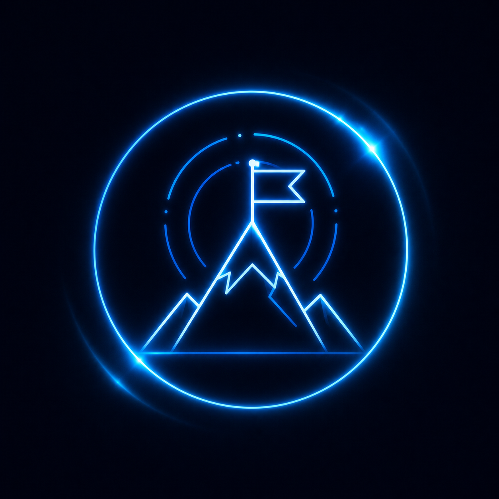

Mission既存の常識を疑い、
既存の常識を疑い、
本質を追求する
現状の仕組みや慣習に引きずられず、本当に生産性や課題解決につながる方法なのかを検証する。新たな視点から最適な解決策を探し続けます。

✉ CONTACT― Technology × Challenge × Exploration ―
Swingby Labは、経営、AI、新規事業、旅、趣味。
興味を持ったことを実際に試し、学びを共有する実験室です。
現状の仕組みや慣習に引きずられず、本当に生産性や課題解決につながる方法なのかを検証する。新たな視点から最適な解決策を探し続けます。

技術と挑戦を通じて、新しい価値が生まれ続ける機会をつくる。より良い未来へ挑戦できる環境を目指します。
家族との時間を大切にする。
旅から学ぶ、気づきがある。
バイクで走る、新しい景色に出会う。
自由と挑戦を楽しむ時間。
知らない世界へ飛び込む。
新しい体験が、人生を豊かにする。